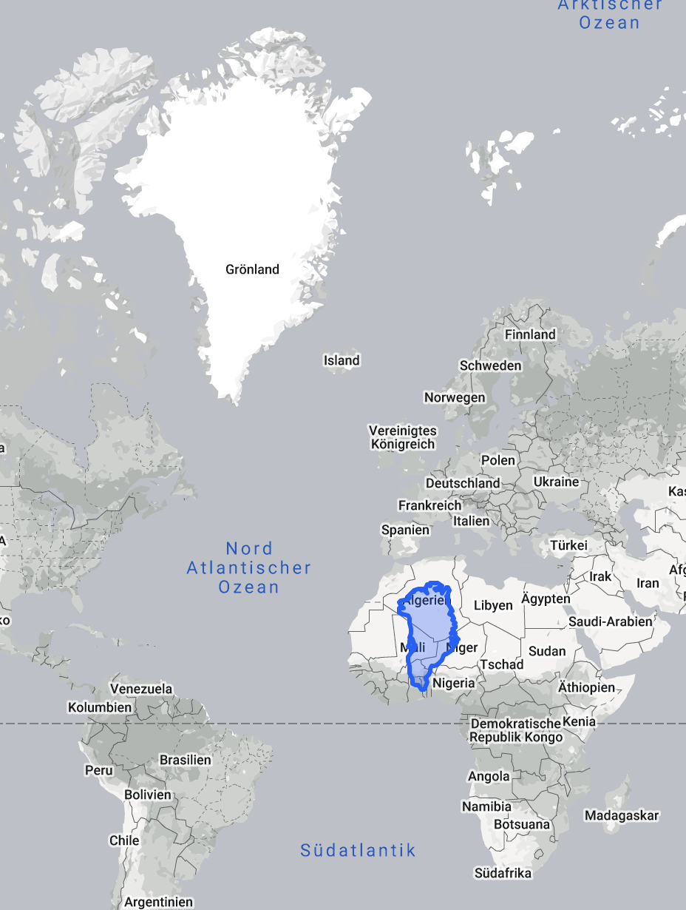
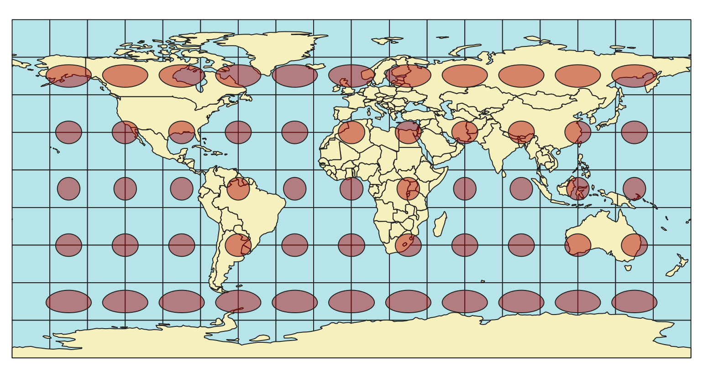
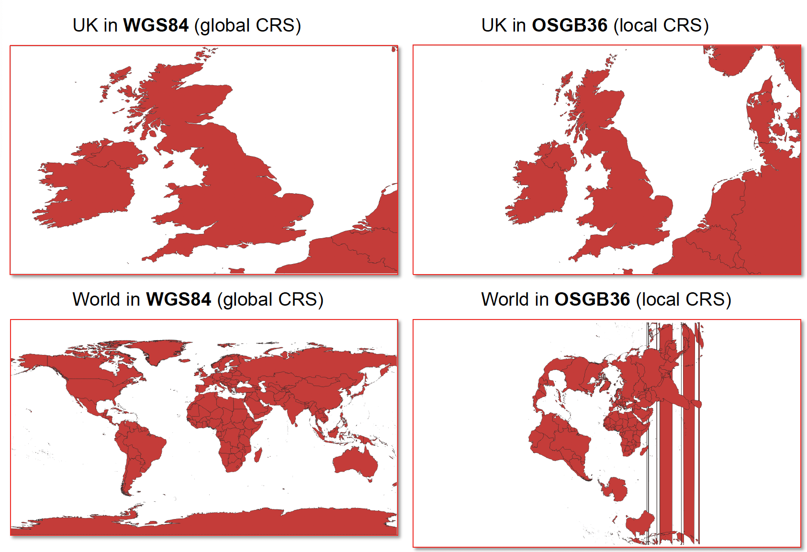
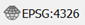

2.2. Proyecciones cartográficas#
2.2.1. Introducción#
Una cuestión importante a la hora de crear un mapa de una región, es que es imposible crear una representación de una esfera en un plano 2D sin distorsionar el mapa. La transformación de un objeto 3D en una superficie plana puede realizarse con ayuda de una proyección cartográfica. A lo largo de los siglos, los cartógrafos y los matemáticos han desarrollado una multitud de métodos diferentes para proyectar la Tierra sobre una superficie plana (Fig. 2.15). Sin embargo, nunca es posible representar correctamente el mundo en una superficie plana (consulte el video anterior). Toda proyección cartográfica distorsiona la longitud entre dos puntos, los ángulos entre dos líneas (direcciones) o el tamaño de un área. Una proyección cartográfica sólo puede representar correctamente una de estas tres dimensiones. Esto significa que, según método de proyección cartográfica, su mapamundi no representará correctamente el tamaño, los ángulos o las distancias.

Fig. 2.15 Ejemplos de proyecciones cartográficas (fuente desconocida. Esta figura se incluye únicamente con fines ilustrativos y no está sujeta a la licencia Creative Commons de esta plataforma).#
Cada proyección cartográfica tiene su caso práctico. Por ejemplo, la proyección cartográfica de Mercator muestra correctamente los ángulos entre dos puntos. Se utilizaba mucho en la época de la navegación marítima sin satélites, ya que los barcos podían navegar hacia un destino, mediante el seguimiento de una línea recta en un mapa. Por ejemplo, la proyección cartográfica de Mercator muestra correctamente las intersecciones de las carreteras: una carretera que se cruza con otra en ángulo recto, se mostrará como tal en una proyección Mercator. Esto es especialmente útil durante la navegación. La forma de un área permanece en la posición correcta, ya que los ángulos entre cada línea se mantienen. Sin embargo, si aumenta la escala del mapa, el tamaño y las distancias se distorsionan drásticamente (véase la figura siguiente). Además, cuanto más se aleja del ecuador, mayor es la distorsión.
Note
The True Size of La proyección cartográfica Mercator es conocida por distorsionar el tamaño de los distintos países. Puede comprobar el tamaño real en comparación con las distintas ubicaciones en el mapa en el sitio web TheTrueSize.com.Un ejemplo popular es Groenlandia en comparación con África, que en el mapa parecen tener aproximadamente el mismo tamaño, pero en realidad, África es mucho más grande.
{kind=link}

Fig. 2.16 Comparación Groenlandia - África (fuente: The True Size of).#
2.2.2. Cómo elegir un sistema de coordenadas proyectadas apropiado#
En los SIG, proyectamos la Tierra sobre un sistema de coordenadas plano (de ahí el nombre de sistema de referencia de coordenadas o SRC). Es crucial, que sea consciente de que sus datos pueden estar en un SRC y su proyecto QGIS en otro SRC.
El SRC del proyecto aparece en la esquina inferior derecha de lainterfaz de QGIS. Aquí, puede ver el código EPSG. EPSG son las siglas de European Petroleum Survey Group y se refiere a un sistema de códigos estandarizado para sistemas de referencia de coordenadas (SRC) y sus proyecciones cartográficas. Cada código EPSG (p.ej., EPSG:4326 para WGS84) identifica, de forma única, un SRC específico, lo que ayuda a garantizar la coherencia y la interoperabilidad de los datos geoespaciales entre diferentes plataformas y aplicaciones.
Códigos EPSG: Se trata de identificadores numéricos asignados por la base de datos EPSG a sistemas de referencia de coordenadas específicos, por lo que son concisos e inequívocos (p.ej., EPSG:4326 para WGS84). Proporcionan una forma normalizada de hacer referencia a los SRC en diversas aplicaciones SIG.
Nomenclatura del SRC: Suelen ser nombres descriptivos para los sistemas de referencia de coordenadas (p.ej., “WGS 84” o “NAD83”). Aunque los nombres pueden proporcionar información sobre el sistema utilizado, es posible que no sean únicos o universalmente reconocidos, lo que puede dar lugar a confusión sin el código EPSG que los acompaña.
Para cambiar el SRC de sus datos y proyecto, siga los pasos, que se explican a continuación. El código, por defecto, SRC/EPSG de todo proyecto QGIS es el Sistema Geodésico Mundial 84 (EPSG: 4326). Este (SRC) está optimizado para mapamundi y por tanto, no es ideal para la mayoría de las aplicaciones humanitarias, ya que necesitamos proyecciones cartográficas específicas para cada región que ofrezcan la menor distorsión en la escala que deseamos representar.
Tip
Elija la proyección cartográfica en función de su área de interés. Existen (SRC) especiales, que se han creado para reducir la distorsión y la inexactitud de las proyecciones cartográficas para diferentes regiones de la Tierra. Encontrará todas las proyecciones cartográficas y sus códigos SRC en EPSG.io.
Observe las siguientes imágenes y preste atención a cómo los diferentes sistema de referencia de coordenadas cambian y distorsionan el mapamundi.

Fig. 2.17 La proyección cartográfica de Mercator (EPSG:54004) (fuente: HeiGIT).#
Observe que la forma del círculo no cambia. Fuera de esto, podemos concluir que los ángulos permanecen iguales. Sin embargo, los círculos se hacen más grandes cuanto más se alejan del ecuador, y la distancia entre estos círculos cambia cuanto más se alejan del ecuador. Por lo tanto, podemos concluir que las distancias y los tamaños se distorsionan con la proyección cartográfica de Mercator. El punto fuerte de la proyección cartográfica de Mercator es que conserva los ángulos entre dos líneas. Podemos verlo porque los círculos permanecen perfectamente redondos cuanto más se alejan del ecuador.
{kind=link}

Fig. 2.18 Sistema Geodésico Mundial 1984 (EPSG:4326) (fuente: HeiGIT).#
El WGS 84 es un SRC que consiste en un elipsoide que se asemeja mucho a la forma de la Tierra. En lugar de unidades métricas de medida, utiliza grados angulares (latitud y longitud). La forma de los círculos de Tissot no tiene distorsiones cerca del ecuador, pero se alarga en el eje Este-Oeste, cuanto más se aleja del ecuador. A diferencia de la proyección cartográfica de Mercator, no hay distorsión en la dirección Norte-Sur. Como los círculos se distorsionan, podemos deducir que este SRC distorsiona los ángulos.

Fig. 2.19 Proyección cilíndrica equidistante mundial (EPSG:54002) (fuente: HeiGIT).#
La proyección cilíndrica equidistante mundial de SRC, es equidistante (no distorsiona la longitud) a lo largo de cualquier meridiano (círculos de longitud; de Norte a Sur) y a lo largo de los dos paralelos estándar. La forma, la escala y el área se distorsionan cuanto más se alejan de las paralelas estándar.
Esta tabla muestra una visión general sobre qué proyecciones cartográficas utilizar para cada característica necesaria:
Característica |
Mercator (cilíndrico) |
Proyección cilíndrica de Lambert |
Proyección cónica de Albers |
|---|---|---|---|
Forma |
✅ |
❌ |
✅ |
Rotación |
✅ |
✅ |
❌ |
Zona |
❌ |
✅ |
✅ |
Otra consideración muy importante a la hora de elegir el sistema de referencia de coordenadas es que, dependiendo del elipsoide y del método utilizado para proyectar, un mismo punto puede estar situado en lugares diferentes (véase Fig. 2.20). En la figura siguiente, el mismo punto se codifica en 3 sistemas de referencia diferentes.

Fig. 2.20 El mismo punto en tres sistemas de referencia diferentes (fuente: HeiGIT).#
2.2.2.1. Sistemas de referencia de coordenadas métricas y geográficas#
Existen dos tipos diferentes de sistemas de referencia de coordenadas: geográficos o métricos.
Un SRC geográfico se basa en un modelo tridimensional y elipsoidal de la Tierra. Utiliza medidas angulares (latitud y longitud) para definir las ubicaciones en la superficie terrestre. Las coordenadas suelen expresarse en grados (p.ej., 45°N, 120°O).
Ventajas: Al basarse en la curvatura de la Tierra, puede utilizarse para representar ubicaciones en cualquier punto del planeta. La mayoría de los conjuntos de datos globales, GPS y sistemas de cartografía utilizan el SRC geográfico, lo que lo hace altamente compatible con diversas fuentes de datos. Las ubicaciones pueden especificarse con precisión mediante mediciones angulares.
Desventaja: Como utiliza medidas angulares, las distancias, áreas y formas pueden estar muy distorsionadas. Dado que la distancia entre los círculos de latitud y longitud cambia, la conversión de ángulos a metros no es constante
Un SRC métrico es una representación 2D de la superficie terrestre. Aunque es difícil representar grandes zonas del globo en una superficie 2D sin superficie, es posible crear una proyección cartográfica en 2D de una región limitada con una distorsión mínima. Las unidades cartográficas suelen ser metros o pies. Se crea mediante la proyección de la Tierra sobre un plano.
Ventajas: Como utiliza una superficie plana, usted puede calcular distancias, áreas y ángulos con precisión.
Desventajas: Un determinado SRC proyectado suele estar optimizado para una región concreta. Utilizarlo fuera de su área prevista puede provocar distorsiones significativas en la distancia, el área y la forma.

Fig. 2.21 Una representación geográfica del globo terráqueo. La distancia entre los meridianos converge hacia el polo norte y el polo sur (fuente: HeiGIT).#
Caution
Al procesar los datos geográficos, el QGIS siempre utiliza las unidades de medida de la capa que está procesando. Esto significa que si desea calcular, por ejemplo, la distancia en kilómetros, la capa debe estar en un SRC métrico. Puede comprobar las unidades de medida de cualquier capa haciendo clic con el botón derecho sobre la capa en el panel de capas > Properties > Information > Coordinate Reference System (CRS).
2.2.2.2. SRC local y mundial#
{kind=link}

Fig. 2.22 Sistemas de referencia de coordenadas locales y globales (SRC) (fuente: Cruz Roja Británica).#
Como puede ver, las regiones más pequeñas aparecen sesgadas y distorsionadas en un SRC global. Para superficies más pequeñas deben utilizarse proyecciones cartográficas locales, ya que ofrecen una visualización más precisa. Sin embargo, las proyecciones cartográficas locales distorsionan mucho el mapa a nivel global.
2.2.2.3. Cómo comprobar y cambiar el sistema de referencia de coordenadas del proyecto#
¡Ahora es su turno!
Entender las proyecciones cartográficas y los sistemas de referencia de coordenadas no es fácil. Los siguientes pasos pueden seguirse con cualquier capa de datos geográficos de su proyecto QGIS.
Note
Una de las primeras cosas que debe hacer al iniciar un nuevo proyecto QGIS es comprobar y ajustar el código SRC/EPSG a la región o zona en la que esté trabajando. Si está trabajando en un mapa que muestre todo el globo terráqueo, deberá utilizar una proyección cartográfica global como la proyección Mercator. Si trabaja en una región más pequeña, como un continente, un país o incluso regiones más pequeñas, deberá utilizar siempre un SRC local, para evitar imprecisiones. Si no sabe SRC utilizar, puede buscar uno adecuado en EPSG.IO. Sólo tiene que introducir el nombre de su región y examinar las opciones disponibles. Asegúrese de que el SRC elegido se encuentre en la unidad de medida correcta (metros, pies o grados)
Abrir un proyecto QGIS
En la esquina inferior derecha de QGIS se encuentra el botón
EPSG. El número que aparece junto a él es el código EPSG utilizado actualmente en el proyecto. Para ver más información o cambiar el SRC, haga clic en elCurrent CRS-botón
.Se abrirá la ventana
Project Properties. Aquí puede ver todos los códigos SRC/EPSG disponibles y sus propiedades.Para cambiar el código SRC/EPSG, seleccione el que desee utilizar y haga clic en
Apply.
Video: Cómo comprobar y cambiar el SRC en su proyecto QGIS
2.2.2.4. SRC del proyecto y SRC de la capa#
El sistema de referencia de coordenadas de su proyecto QGIS determina cómo el QGIS muestra la información. Sin embargo, las capas y los conjuntos de datos tienen su propio SRC. Esto puede verse en los metadatos o en las propiedades de las capas del conjunto de datos. El SRC de la capa se refiere al sistema coordinado de las entidades geográficas o elementos del conjunto de datos. Las mismas coordenadas en dos sistemas de referencia de coordenadas diferentes no se refieren al mismo lugar de la Tierra. Esto se debe a la distorsión de la distancia y el área.
Note
Lo primero que debe hacer al cargar una nueva capa o conjunto de datos en su proyecto QGIS, debe ser comprobar el sistema de referencia de coordenadas del conjunto de datos, y reproyectarlo al SRC del proyecto si es necesario. De este modo, garantizará la coherencia de su proyecto y que los geoobjetos de su capa se encuentran en las ubicaciones correctas. De lo contrario, creará resultados falsos.
2.2.2.4.1. Modificación de la proyección cartográfica de una capa vectorial#
VectorTabulador ->Data Management Tools->Reproject LayerSeleccione el código SRC/EPSG de destino.
Guarde el nuevo archivo con un clic en los tres puntos situados junto a
Reprojected, especifique el nombre del archivo y la ubicación donde desea guardarlo.Haga clic en
Run
Video: Cómo cambiar el SRC de un vector una capa
2.2.2.4.2. Modificación de la proyección cartográfica de una capa ráster#
RasterTabulador ->Projections->Warp (Reproject)Seleccione el código SRC/EPSG de destino
Seleccione el método de remuestreo
Guarde el nuevo archivo haciendo clic en los tres puntos situados junto a
Reprojected, especifique en el nombre del archivo y la ubicación donde desea guardarlo.Haga clic en
Run
Video: Cómo cambiar el SRC de una capa ráster
2.2.3. Preguntas de autoevaluación#
Ponga a prueba sus conocimientos
Tómese un momento para poner a prueba lo que ha aprendido en este capítulo respondiendo a las siguientes preguntas:
¿Por qué es necesaria una proyección cartográfica para visualizar la Tierra en 2D? ¿Qué distorsiones son inevitables al proyectar una superficie esférica sobre un plano?
Respuesta
Dado que la Tierra (o, más exactamente, el elipsoide de referencia) es una superficie curva tridimensional, no se puede representar perfectamente en un mapa plano (2D) sin distorsiones. El proceso de “proyectar” transforma la superficie curva en un plano.
Cualquier proyección cartográfica distorsiona necesariamente al menos uno de los siguientes elementos: ángulos (direcciones), áreas (tamaños relativos) o distancias (escalas). A menudo se pueden preservar bien una o dos propiedades, pero no todas simultáneamente.
Por ejemplo, la proyección cartográfica de Mercator conserva los ángulos (por lo que las formas son localmente correctas), lo que resulta útil para la navegación, pero distorsiona gravemente las áreas (especialmente hacia los polos).
Otro ejemplo: las proyecciones cartográficas equidistantes conservan las distancias a lo largo de determinadas líneas (meridianos o paralelos estándar), pero distorsionan la forma o el área en otras partes
Explique la diferencia entre un SRC geográfico y uno proyectado (o métrico). ¿Cuáles son sus ventajas y desventajas?
Respuesta
Un sistema de referencia de coordenadas geográficas (SRC) utiliza un modelo elipsoidal (o esférico) de la Tierra y expresa las ubicaciones mediante coordenadas angulares (latitud, longitud), generalmente en grados.
Ventajas: Refleja de forma natural la curvatura de la Tierra; funciona globalmente (se puede localizar en cualquier lugar del globo). Muchos conjuntos de datos globales, sistemas GPS y mapas están inherentemente en formato geográfico (latitud/longitud), por lo que brinda compatibilidad.
Desventajas: Dado que la latitud/longitud son angulares, su conversión a medidas lineales (metros, kilómetros) no es uniforme. Las distancias, áreas y formas pueden estar distorsionadas, especialmente lejos del ecuador. No se pueden medir distancias o áreas euclidianas de forma fiable sin proyectar primero
Un SRC proyectado (métrico) transforma la superficie terrestre (o parte de ella) en un plano bidimensional, con unidades lineales (metros, pies, etc.). La proyección cartográfica “aplana” la superficie.
Ventajas: Como los datos están en un espacio métrico plano, se pueden calcular distancias, áreas y ángulos de forma más directa y con menos distorsión (dentro de la extensión prevista de la proyección cartográfica). Es mejor, para la mayoría de los análisis espaciales (buffer, medición) cuando el área es limitada.
Desventajas: Cada SRC proyectado suele estar optimizado para una región o área concreta. Fuera de esa región, la distorsión aumenta (en forma, escala o área). Una sola proyección cartográfica no puede servir uniformemente en todo el globo. Además, las proyecciones cartográficas pueden introducir distorsiones en las direcciones o el área, incluso dentro de su dominio.
¿Por qué es importante elegir un SRC adecuado para su área de interés (local vs. global)? ¿Qué problemas podrían surgir, si se aplica un SRC local a los datos globales (o viceversa)?
Respuesta
Porque cada proyección cartográfica está optimizada para reducir la distorsión en algún aspecto (área, distancia, forma) sobre una extensión espacial determinada (región). Para un área local, un SRC sintonizado local o regionalmente minimizará la distorsión y permitirá mediciones más precisas
Si se aplica un SRC local (pensado para un área pequeña) a datos globales, las distorsiones se vuelven extremas fuera de la región prevista. Las entidades geográficas podrían estar sesgadas, estiradas o mal situadas, y los cálculos de distancia/área serán muy imprecisos en regiones alejadas de la zona óptima de la proyección cartográfica.
Por el contrario, utilizar una proyección global (p.ej., un Mercator mundial) para una región local puede no aprovechar la posibilidad de reducir la distorsión, e incluso puede producir una precisión local peor que una proyección más especializada. Además, las proyecciones cartográficas globales suelen distorsionar grandes áreas, por lo que los detalles locales podrían verse afectados.
En resumen: la aplicación de un SRC desajustado da lugar a incoherencias, desalineación de capas, errores en las mediciones y relaciones espaciales engañosas.
¿Qué es un código EPSG y qué utilidad tiene a la hora de seleccionar o remitir a un SRC?
Respuesta
EPSG son las siglas de European Petroleum Survey Group, que mantiene un registro (base de datos) de los sistemas de referencia de coordenadas y de las proyecciones cartográficas.
Un código EPSG es un identificador numérico (p.ej., EPSG:4326) asignado a un SRC concreto.
Es útil porque proporciona una forma estandarizada e inequívoca de referirse a un SRC en todos los programas y conjuntos de datos del SIG. En lugar de basarse únicamente en nombres posiblemente ambiguos, el código EPSG garantiza la identificación exacta del SRC (elipsoide, parámetros de proyección cartográfica, unidades).
Al seleccionar un SRC en QGIS u otras herramientas del SIG, a menudo se busca por código EPSG o se filtra por región. El sitio web EPSG.io es un recurso útil para buscar los códigos del SRC apropiados para su región.
¿Cómo se reproyecta (cambia el SRC) de una capa vectorial en QGIS?
Respuesta
En la barra superior, navegue hasta el
Vectormenú →Data Management Tools→Reproject LayerEn la ventana de parámetros, seleccione el SRC de destino (mediante la búsqueda del código EPSG o el nombre)
Hacer clic en
Run. Se añadirá una nueva capa llamadaReprojectedal lienzo del mapa
2.2.4. Recursos adicionales#
El sitio I Hate Coordinate Systems! ofrece una “guía basada en los problemas más comunes de los SRC, sus causas y soluciones”. Consúltelo si tiene algún problema con los SRC.